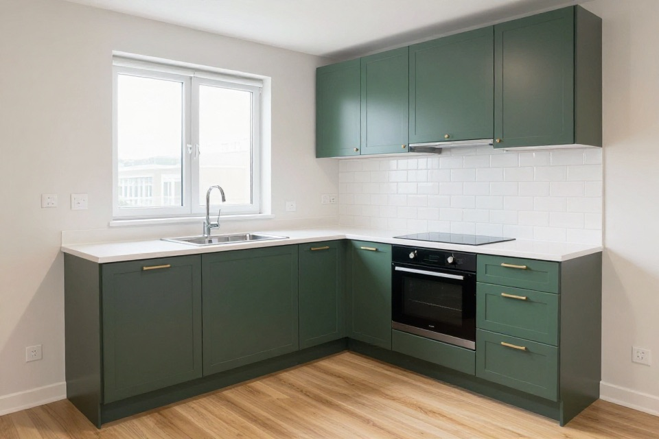

 ÖnceSonra
ÖnceSonra
Mutfak, banyo, komple daire. Teslim günü teklifte yazar.
Ataşehir, Kadıköy, Ümraniye, Maltepe ve Üsküdar'da tadilat. Keşif ücretsiz, teklif ve sözleşme yazılı.
Örnek takvim: bir banyo yaklaşık 9 iş günü
Her işe başlamadan bu takvimi size yazılı veririz. Hangi gün evde kim çalışacak, baştan bilirsiniz.
Su yalıtımı test edilmeden fayansa geçilmez: gider kapatılıp 24 saat su bekletilir.
Son işler
Her işte semt, süre ve kapsam yazılı.

- Komple daire7 haftaKadıköy, 3+1, 115 m², sıva, boya, zemin, elektrik
- Mutfak yenileme8 iş günüÜmraniye, 9 m², dolap, tezgâh, fayans
- Boya, alçı6 iş günüMaltepe, 2+1, 85 m², tavan alçısı, iki kat boya
- Parke2 iş günüÜsküdar, 45 m², laminat, süpürgelik
İşi biz yaparız, taşerona vermeyiz
Kalfa Yapı 2009'dan beri Ataşehir'de. Usta başı Hasan Kalfa (örnek ad). Sekiz kişilik kendi ekibimizle çalışırız: iki fayansçı, bir tesisatçı, bir elektrikçi, bir boyacı-alçıcı, bir marangoz-parkeci, bir yardımcı ve şantiyeyi her gün gezen usta başı. Hangi gün evde kim olacağını takvimde yazarız.
4,9 Google'da 120'yi aşkın yorum · Haritada aç
Yaptığımız işler
- Banyo yenileme
- Mutfak yenileme
- Komple daire tadilatı
- Su yalıtımı
- Sıhhi tesisat
- Elektrik tesisatı
- Seramik, fayans
- Boya, badana
- Alçı, kartonpiyer
- Asma tavan
- Laminat, parke
- İç kapı değişimi
- Dolap, tezgâh montajı
- Isı yalıtımı (iç cephe)
Keşif isteyin, yazılı teklif alın
Üç soru yeter. Fotoğrafınız varsa WhatsApp'ta ekleyin, keşif daha kısa sürer.
Ev sahipleri ne diyor
Banyo için 9 gün dediler, 9. gün akşam anahtarı verdiler. Her akşam ne yapıldığını fotoğrafla attılar.
Teklifte yazmayan tek kuruş istemediler. Malzemeyi ben seçtim, sadece işçilik ödedim.
Komşulara söküm gününü önceden kendileri haber verdi, apartmanda tek şikâyet olmadı.
Sık sorulanlar
Keşif ücretli mi?
Hayır. Ataşehir, Kadıköy, Ümraniye, Maltepe ve Üsküdar'da keşif ücretsizdir; ölçü alınır, ardından yazılı teklif gelir.
Banyo tadilatı kaç gün sürer?
Standart bir banyo 8-10 iş gününde biter. Teslim günü teklifte yazılıdır.
Malzemeyi kim alıyor?
İki seçenek var: malzemeyi biz alırız ve faturasını veririz, ya da siz seçersiniz, biz yalnız işçilik alırız.
Sözleşme yapıyor musunuz?
Evet. İşe başlamadan kapsam, malzeme, ödeme planı ve teslim tarihi yazılı sözleşmeye geçer. İş sırasında teklifte olmayan bir şey çıkarsa önce size yazılı sorulur; onayınız olmadan yapılmaz.
Evime zarar gelirse? Moloz ve temizlik kimde?
Moloz torbalanıp apartmandan bizim tarafımızdan çıkarılır. Kapı, zemin ve ortak alanlar işe başlamadan korunur; iş bitince kaba temizlik yapılır. İşten kaynaklı bir hasar olursa yazılı olarak tespit edilip bizim tarafımızdan giderilir.
Neleri yapmıyoruz?
Doğalgaz tesisatını yetkili gaz firması yapar, biz yapmayız. Taşıyıcı duvar, cephe ya da ruhsat gerektiren işlere girmeyiz; söküm ve gürültülü işlerden önce apartman yönetimine biz haber veririz.
Garanti veriyor musunuz?
Su yalıtımı ve tesisat işçiliği için garanti kapsamı ve süresi teklifte ve sözleşmede yazılı verilir.
Ödeme nasıl?
Başta malzeme payı, iş ortasında bir ara ödeme, kalan teslimde. Oranlar teklifte yazılıdır.